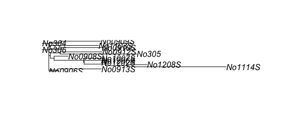
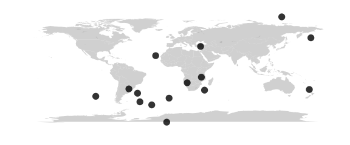
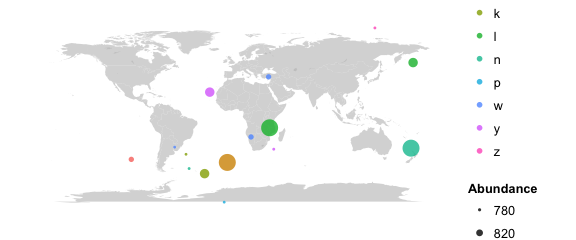
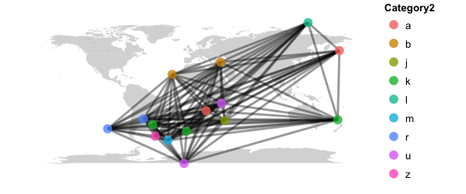
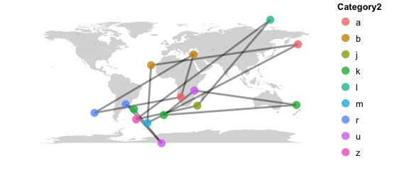
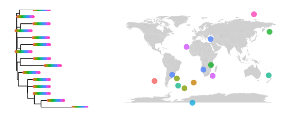
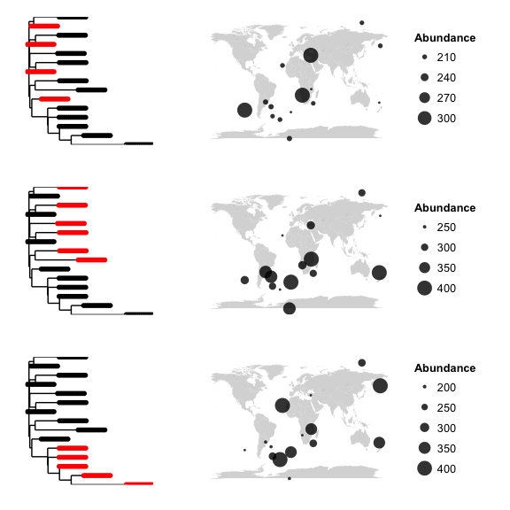

phylogeo is based on top of phyloseq and therefore uses the same data model, an excellent overview of which can be found here. This vignette is simply a continuation of that tutorial. We create some random data from phyloseq including the following:
- an OTU table,
- a Taxonomy Table,
- a Sample Data dataframe.
- Latitude and Longitude information that is added to the Sample Data, and
- A phylogenetic tree of the relationship betwen the OTUs contianed in the OTU table.
Phyloseq provides tools for dealing with the first three items on this list. By adding location information and phylogenetic information you can take advantage fo the plotting tools in the phylogeo package.
Note: If these data-types don’t make sense to you, it may be worthwhile to look at the phyloseq tutorials to get your bearings. For a grasp of what OTUs are and how they are used in metagenome analysis you could do worse than to start with Robert Edgars’ page on OTUs. Edgar is the author of a number of highly used bioinformatic programs that comarse DNA sequences including Muscle and USeqrch (see here).
Generate phyloseq data and plot with phylogeo
Load phylogeo and get some sequecne data from the ape package
In this vignette, sequence data from the ape package will be used, although you will probably have your own sequencing data to use. Everything except that sequence data is generated denovo using base R.
Create an OTU table
An operational taxonomic unit (OTU) table that a table holding count information. The row values are typicaly OTUs which in macro-biology are typically species, but in microbiology are semi-arbitrary cutoffs of sequence similarity that corresponds roughly to species. For 16S studies, these OTUs are typically 16S DNA amplicon sequences clustered at 97% identity. We can make an arbitrary dataset where out OTUs will be the woodmouse data, and the columns will be our samples.
otumat = matrix(sample(1:100, 75, replace = TRUE),
nrow = length(woodmousenames),
ncol = samplenum)
rownames(otumat) <- woodmousenames
colnames(otumat) <- samplenames
otumat## Sample1 Sample2 Sample3 Sample4 Sample5 Sample6 Sample7 Sample8
## No305 50 71 91 17 5 50 71 91
## No304 79 37 6 49 48 79 37 6
## No306 55 98 84 37 70 55 98 84
## No0906S 9 85 97 80 14 9 85 97
## No0908S 43 93 27 43 75 43 93 27
## No0909S 98 62 5 53 44 98 62 5
## No0910S 34 55 86 54 2 34 55 86
## No0912S 90 62 71 17 89 90 62 71
## No0913S 42 27 39 57 60 42 27 39
## No1103S 89 36 78 38 99 89 36 78
## No1007S 67 11 64 87 58 67 11 64
## No1114S 82 41 42 34 96 82 41 42
## No1202S 44 41 38 98 33 44 41 38
## No1206S 61 45 10 94 36 61 45 10
## No1208S 91 40 38 92 48 91 40 38
## Sample9 Sample10 Sample11 Sample12 Sample13 Sample14 Sample15
## No305 17 5 50 71 91 17 5
## No304 49 48 79 37 6 49 48
## No306 37 70 55 98 84 37 70
## No0906S 80 14 9 85 97 80 14
## No0908S 43 75 43 93 27 43 75
## No0909S 53 44 98 62 5 53 44
## No0910S 54 2 34 55 86 54 2
## No0912S 17 89 90 62 71 17 89
## No0913S 57 60 42 27 39 57 60
## No1103S 38 99 89 36 78 38 99
## No1007S 87 58 67 11 64 87 58
## No1114S 34 96 82 41 42 34 96
## No1202S 98 33 44 41 38 98 33
## No1206S 94 36 61 45 10 94 36
## No1208S 92 48 91 40 38 92 48Now we need a pretend taxonomy table
The taxonomy table lets you assign taxonomic information for each OTU. The rownames of the taxonomy table must be the same as the OTU table. Each of the columns represent some value, typically corresponding to the classic Kindom, Phylum…. Species heirarchy. However, this table can be used to assign arbitrary data to OTUs as well. Here we will generate some random taxonomy data using classic phylogeny, but with some made-up, filler data.
taxmat = matrix(sample(letters, 70, replace = TRUE),
nrow = nrow(otumat),
ncol = 7)
rownames(taxmat) <- rownames(otumat)
colnames(taxmat) <- c("Domain", "Phylum", "Class", "Order",
"Family", "Genus", "Species")
taxmat## Domain Phylum Class Order Family Genus Species
## No305 "n" "k" "m" "j" "n" "d" "r"
## No304 "a" "z" "v" "h" "n" "n" "h"
## No306 "z" "n" "f" "o" "s" "n" "h"
## No0906S "j" "d" "h" "p" "w" "e" "k"
## No0908S "r" "j" "s" "a" "i" "g" "x"
## No0909S "d" "r" "c" "z" "g" "k" "j"
## No0910S "n" "h" "i" "r" "q" "t" "w"
## No0912S "n" "h" "j" "z" "d" "r" "m"
## No0913S "e" "k" "y" "x" "h" "g" "c"
## No1103S "g" "x" "i" "u" "i" "e" "z"
## No1007S "k" "j" "h" "u" "n" "k" "m"
## No1114S "t" "w" "e" "k" "a" "z" "v"
## No1202S "r" "m" "n" "h" "z" "n" "f"
## No1206S "g" "c" "a" "f" "j" "d" "h"
## No1208S "e" "z" "g" "n" "r" "j" "s"And some fake Sample Data
Sample data is information about your samples. The sample data rownames must corresond to the values in the OTU table. We will make some smaple data with some arbitrary columns. These columns are often used to store informaiton about sample processing, or about the samples themselves.
sampledata <- matrix(sample(letters,samplenum*7, replace=TRUE),
nrow = samplenum,
ncol = 7)
rownames(sampledata) <- samplenames
# in your real data these columns might hold soil data, or processing information
colnames(sampledata) <- paste0("Category", 1:ncol(sampledata))
# generate some random lat and lon data and add it to the smaple data.
lat = sample((-90:90), samplenum)
lon = sample((-180:180), samplenum)
sampledata <- cbind(sampledata, lat, lon)
sampledata <- as.data.frame(sampledata)
sampledata## Category1 Category2 Category3 Category4 Category5 Category6
## Sample1 n k g z p l
## Sample2 w b v d p m
## Sample3 w r o j l r
## Sample4 y b h d p s
## Sample5 z l i h n u
## Sample6 g k m n j o
## Sample7 b r c i k t
## Sample8 p u d s o d
## Sample9 l a h c v c
## Sample10 y j g y x v
## Sample11 l u d l v e
## Sample12 w a j b p a
## Sample13 k k y h m l
## Sample14 k m r a o h
## Sample15 n z m c f j
## Category7 lat lon
## Sample1 s -32 172
## Sample2 a 38 34
## Sample3 y -31 -57
## Sample4 v 23 -23
## Sample5 s 86 137
## Sample6 i -46 -6
## Sample7 t -43 -99
## Sample8 n -85 -9
## Sample9 k 52 174
## Sample10 n -33 39
## Sample11 a -12 35
## Sample12 c -21 17
## Sample13 k -38 -46
## Sample14 x -57 -28
## Sample15 i -52 -43make a phylogenetic tree from the woodhouse sequences
To take advantage of the information stored in the DNA sequences we need to generate a phylogenetic tree. Once generated and loaded into the physeq object, phylogeo can use to explore whether there are geogrphic trends in the subclades. The members of the tree must be the same names as the names of the rows (OTUs) in the OTU table.
#muscle is an APE wrapper for the muscle program
musc <- muscle(woodmouse)
tree <- nj(musc)
plot(tree)
create the phyloseq object
All of the pieces now must be put together into the phyloseq pbject
phy <- phyloseq(sample_data = sample_data(sampledata),
otu_table = otu_table(otumat, taxa_are_rows=TRUE),
tax_table = tax_table(taxmat),
phy_tree = phy_tree(tree))
phy## phyloseq-class experiment-level object
## otu_table() OTU Table: [ 15 taxa and 15 samples ]
## sample_data() Sample Data: [ 15 samples by 9 sample variables ]
## tax_table() Taxonomy Table: [ 15 taxa by 7 taxonomic ranks ]
## phy_tree() Phylogenetic Tree: [ 15 tips and 13 internal nodes ]Phylogeo can now be used to map this phyloseq object.
# map the locations
# random lat/lons yield samples all over
map_phyloseq(phy)
# map the locations
# color by sample data category; size by abundance
map_phyloseq(phy, color="Category1", size="Abundance")
# map the relationship between samples
map_network(phy, color="Category2", lines=TRUE)
# map the relationship between samples
map_network(phy, color="Category2", lines=TRUE)
# only keep highly related samples
# tip: if there are unrelated samples that drop out of the network analysis try base_data = TRUE
map_network(phy, color="Category2",lines=TRUE, maxdist = 0.3)
# map the tree
# with this random data, perhaps it is not surprisign to wind all of the woodmouse sequences in each of the smapel locations.
map_tree(phy, color="Category1")
# map clusters
# cluster analyses can let you look at the possilbity of non random distributions of subclades.
# does, say, a certain subclade only occur in North America?
map_clusters(phy)
# plot distance
# pairwise sample distances ecological distance vs. geographic distance
plot_distance(phy)